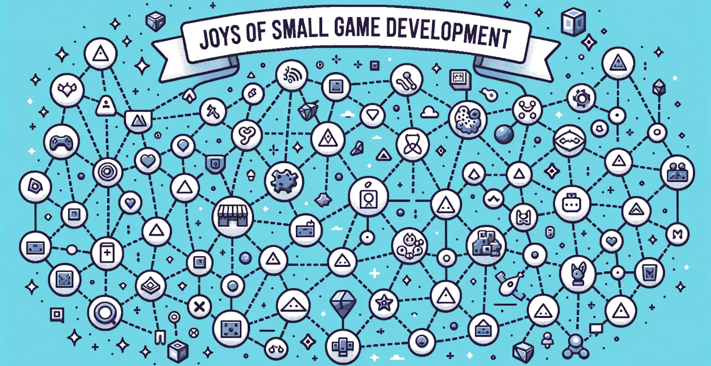

Joys of Small Game Development
Introduction
Game development serves as a vibrant canvas for one's creativity. Especially when focusing on small games, which are simple to create and instantly enjoyable, one can quickly immerse oneself in their allure. Through this article, I aim to delve into the joy of crafting small games.
In the section "Making Small Games, Which Is Fun in Itself", the essence of what small games are and why creating them is enjoyable will be explored. Developing small games is not merely a training ground for bigger projects, but it holds its unique charm.
When embarking on creating a small game, deciding on which programming language or game engine to utilize is an initial hurdle. In the "Target Devices and Development Environment" section, I have gathered information regarding these concerns.
Conceiving the core idea is key to small game creation. The section "How to Come Up with Ideas for Small Games" provides tips on brainstorming such ideas. Furthermore, in "Constraints: A Catalyst for Creativity and Game Completion", the method of imposing constraints on game input methods or resolution to foster better ideas is discussed.
In small games, it’s common for the gameplay to gradually become more challenging as the game progresses. "What Constitutes Appropriate Difficulty in Small Games" deliberates on how to set a level of difficulty that players find moderately challenging.
A game is dull without some flavor. In "Making Games ‘Juicy’", the methods to enrich the game by adding effects and sound, centering around the term 'juicy', are introduced.
In "Creating Your Own Game Development Tools", the narrative extends to creating custom libraries or game engines alongside your game. While crafting tools for the game is immensely enjoyable, it’s a double-edged sword as diving too deep may hinder the game’s completion.
For the quick creation of small games, there’s a method of auto-generating graphics and sound. "Enhancing Development through Automation" introduces ways to have the computer generate pixel art, background music, sound effects, and levels.
If computers could create games, they would further ease human effort. "Can Small Games Be Self-Generated?" contemplates the possibility of computers developing games from scratch, focusing on the utilization of AI chatbots.
I've woven various topics concerning small game development throughout this article. Through this narrative, I hope readers will feel the charm of small game development, and that this may serve as a catalyst for many to take up the challenge of creation.
- license: CC BY 4.0
- repository: joys-of-small-game-development-en
- Top page of this article: Introduction - Joys of Small Game Development
- Author's web page: ABA Games